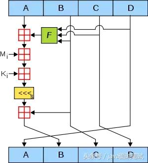
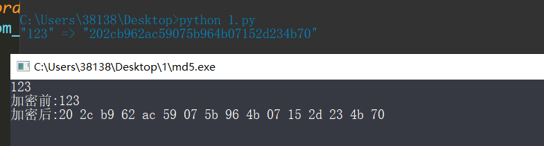

MD5算法分析MD5算法底层原理：
简单概括起来，MD5算法的过程分为四步：处理原文，设置初始值，循环加工，拼接结果。
第一步:处理原文
首先，我们计算出原文长度(bit)对512求余的结果，如果不等于448，就需要填充原文使得原文对512求余的结果等于448。填充的方法是第一位填充1，其余位填充0。填充完后，信息的长度就是512*N+448。
之后，用剩余的位置（512-448=64位）记录原文的真正长度，把长度的二进制值补在最后。这样处理后的信息长度就是512*(N+1)。
举例：消息内容为“gnubd”，就能得到以下内容
67 6E 62 75 64 80 00 00 00 00 00 00 00 00 00 00
00 00 00 00 00 00 00 00 00 00 00 00 00 00 00 00
00 00 00 00 00 00 00 00 00 00 00 00 00 00 00 00
00 00 00 00 00 00 00 00 28 00 00 00 00 00 00 00 注意到最后面这里有个0x28，数8个字节，就是0x0000000000000028，刚刚好是十进制的40，消息的内容是5个字节，也就是40位，还要注意到这里是小端字节序存储
第二步:设置初始值
MD5的哈希结果长度为128位，按每32位分成一组共4组。这4组结果是由4个初始值A、B、C、D经过不断演变得到。MD5的官方实现中，A、B、C、D的初始值如下（16进制）：
A=0x01234567
B=0x89ABCDEF
C=0xFEDCBA98
D=0x76543210第三步:循环加工
这一步是最复杂的一步，我们看看下面这张图，此图代表了单次A,B,C,D值演变的流程。

图中，A，B，C，D就是哈希值的四个分组。每一次循环都会让旧的ABCD产生新的ABCD。一共进行多少次循环呢？由处理后的原文长度决定。
假设处理后的原文长度是M
主循环次数 = M / 512
每个主循环中包含 512 / 32 * 4 = 64 次 子循环。
上面这张图所表达的就是单次子循环的流程。
下面对图中其他元素一一解释：
1.绿色F
图中的绿色F，代表非线性函数。官方MD5所用到的函数有四种：
F(X, Y, Z) =(X&Y) | ((~X) & Z)
G(X, Y, Z) =(X&Z) | (Y & (~Z))
H(X, Y, Z) =X^Y^Z
I(X, Y, Z)=Y^(X|(~Z))在主循环下面64次子循环中，F、G、H、I 交替使用，第一个16次使用F，第二个16次使用G，第三个16次使用H，第四个16次使用I。
2.红色“田”字
很简单，红色的田字代表相加的意思。
3.Mi
Mi是第一步处理后的原文。在第一步中，处理后原文的长度是512的整数倍。把原文的每512位再分成16等份，命名为M0M15，每一等份长度32。在64次子循环中，每16次循环，都会交替用到M1M16之一。
4、Ki
一个常量，在64次子循环中，每一次用到的常量都是不同的。
5.黄色的<<<
左移S位，S的值也是常量。
“流水线”的最后，让计算的结果和B相加，取代原先的B。新ABCD的产生可以归纳为：
新A = 原d
新B = b+((a+F(b,c,d)+Mj+Ki)<>
新C = 原b
新D = 原c
总结一下主循环中的64次子循环，可以归纳为下面的四部分：
第一轮：
FF(a,b,c,d,M0,7,0xd76aa478） s[0]=7, K[0] = 0xd76aa478
FF(a,b,c,d,M1,12,0xe8c7b756） s[1]=12, K[1] = 0xe8c7b756
FF(a,b,c,d,M2,17,0x242070db)
FF(a,b,c,d,M3,22,0xc1bdceee)
FF(a,b,c,d,M4,7,0xf57c0faf)
FF(a,b,c,d,M5,12,0x4787c62a)
FF(a,b,c,d,M6,17,0xa8304613）
FF(a,b,c,d,M7,22,0xfd469501）
FF(a,b,c,d,M8,7,0x698098d8）
FF(a,b,c,d,M9,12,0x8b44f7af)
FF(a,b,c,d,M10,17,0xffff5bb1）
FF(a,b,c,d,M11,22,0x895cd7be)
FF(a,b,c,d,M12,7,0x6b901122）
FF(a,b,c,d,M13,12,0xfd987193）
FF(a,b,c,d,M14,17, 0xa679438e)
FF(a,b,c,d,M15,22,0x49b40821）第二轮：
GG(a,b,c,d,M1,5,0xf61e2562）
GG(a,b,c,d,M6,9,0xc040b340）
GG(a,b,c,d,M11,14,0x265e5a51）
GG(a,b,c,d,M0,20,0xe9b6c7aa)
GG(a,b,c,d,M5,5,0xd62f105d)
GG(a,b,c,d,M10,9,0x02441453）
GG(a,b,c,d,M15,14,0xd8a1e681）
GG(a,b,c,d,M4,20,0xe7d3fbc8）
GG(a,b,c,d,M9,5,0x21e1cde6）
GG(a,b,c,d,M14,9,0xc33707d6）
GG(a,b,c,d,M3,14,0xf4d50d87）
GG(a,b,c,d,M8,20,0x455a14ed)
GG(a,b,c,d,M13,5,0xa9e3e905）
GG(a,b,c,d,M2,9,0xfcefa3f8）
GG(a,b,c,d,M7,14,0x676f02d9）
GG(a,b,c,d,M12,20,0x8d2a4c8a)第三轮：
HH(a,b,c,d,M5,4,0xfffa3942）
HH(a,b,c,d,M8,11,0x8771f681）
HH(a,b,c,d,M11,16,0x6d9d6122）
HH(a,b,c,d,M14,23,0xfde5380c)
HH(a,b,c,d,M1,4,0xa4beea44）
HH(a,b,c,d,M4,11,0x4bdecfa9）
HH(a,b,c,d,M7,16,0xf6bb4b60）
HH(a,b,c,d,M10,23,0xbebfbc70）
HH(a,b,c,d,M13,4,0x289b7ec6）
HH(a,b,c,d,M0,11,0xeaa127fa)
HH(a,b,c,d,M3,16,0xd4ef3085）
HH(a,b,c,d,M6,23,0x04881d05）
HH(a,b,c,d,M9,4,0xd9d4d039）
HH(a,b,c,d,M12,11,0xe6db99e5）
HH(a,b,c,d,M15,16,0x1fa27cf8）
HH(a,b,c,d,M2,23,0xc4ac5665）第四轮：
Ⅱ（a,b,c,d,M0,6,0xf4292244）
Ⅱ（a,b,c,d,M7,10,0x432aff97）
Ⅱ（a,b,c,d,M14,15,0xab9423a7）
Ⅱ（a,b,c,d,M5,21,0xfc93a039）
Ⅱ（a,b,c,d,M12,6,0x655b59c3）
Ⅱ（a,b,c,d,M3,10,0x8f0ccc92）
Ⅱ（a,b,c,d,M10,15,0xffeff47d)
Ⅱ（a,b,c,d,M1,21,0x85845dd1）
Ⅱ（a,b,c,d,M8,6,0x6fa87e4f)
Ⅱ（a,b,c,d,M15,10,0xfe2ce6e0)
Ⅱ（a,b,c,d,M6,15,0xa3014314）
Ⅱ（a,b,c,d,M13,21,0x4e0811a1）
Ⅱ（a,b,c,d,M4,6,0xf7537e82）
Ⅱ（a,b,c,d,M11,10,0xbd3af235）
Ⅱ（a,b,c,d,M2,15,0x2ad7d2bb)
Ⅱ（a,b,c,d,M9,21,0xeb86d391）第四步:拼接结果
这一步就很简单了，把循环加工最终产生的A，B，C，D四个值拼接在一起，转换成字符串即可。
简单实现

python3版本
#!/usr/bin/python3
# MD5 实现及其验证
import math
rotate_amounts = [7, 12, 17, 22, 7, 12, 17, 22, 7, 12, 17, 22, 7, 12, 17, 22,
5, 9, 14, 20, 5, 9, 14, 20, 5, 9, 14, 20, 5, 9, 14, 20,
4, 11, 16, 23, 4, 11, 16, 23, 4, 11, 16, 23, 4, 11, 16, 23,
6, 10, 15, 21, 6, 10, 15, 21, 6, 10, 15, 21, 6, 10, 15, 21]
constants = [int(abs(math.sin(i+1)) * 2**32) & 0xFFFFFFFF for i in range(64)]
# A B C D
init_values = [0x67452301, 0xefcdab89, 0x98badcfe, 0x10325476]
# 非线性函数
functions = 16*[lambda b, c, d: (b & c) | (~b & d)] + \
16*[lambda b, c, d: (d & b) | (~d & c)] + \
16*[lambda b, c, d: b ^ c ^ d] + \
16*[lambda b, c, d: c ^ (b | ~d)]
index_functions = 16*[lambda i: i] + \
16*[lambda i: (5*i + 1)%16] + \
16*[lambda i: (3*i + 5)%16] + \
16*[lambda i: (7*i)%16]
# 对x左移amount位
def left_rotate(x, amount):
x &= 0xFFFFFFFF
return ((x<<amount) | (x>>(32-amount))) & 0xFFFFFFFF
def md5(message):
message = bytearray(message) #copy our input into a mutable buffer
orig_len_in_bits = (8 * len(message)) & 0xffffffffffffffff
message.append(0x80)
while len(message)%64 != 56:
message.append(0)
message += orig_len_in_bits.to_bytes(8, byteorder='little')
hash_pieces = init_values[:]
for chunk_ofst in range(0, len(message), 64):
a, b, c, d = hash_pieces
chunk = message[chunk_ofst:chunk_ofst+64]
for i in range(64):
f = functions[i](b, c, d)
g = index_functions[i](i)
to_rotate = a + f + constants[i] + int.from_bytes(chunk[4*g:4*g+4], byteorder='little')
new_b = (b + left_rotate(to_rotate, rotate_amounts[i])) & 0xFFFFFFFF
a, b, c, d = d, new_b, b, c
for i, val in enumerate([a, b, c, d]):
hash_pieces[i] += val
hash_pieces[i] &= 0xFFFFFFFF
return sum(x<<(32*i) for i, x in enumerate(hash_pieces))
def md5_to_hex(digest):
raw = digest.to_bytes(16, byteorder='little')
return '{:032x}'.format(int.from_bytes(raw, byteorder='big'))
def my_md5(message):
return md5_to_hex(md5(message))
if __name__=='__main__':
demo = b"123"
print('"',demo.decode('ascii'),'" => "',my_md5(demo),'"', sep='')C语言版本版本
#include <string.h>
#include <stdio.h>
#include <string.h>
#include <stdlib.h>
/*md5转换用到的常量，算法本身规定的*/
#define S11 7
#define S12 12
#define S13 17
#define S14 22
#define S21 5
#define S22 9
#define S23 14
#define S24 20
#define S31 4
#define S32 11
#define S33 16
#define S34 23
#define S41 6
#define S42 10
#define S43 15
#define S44 21
#define R_memset(x, y, z) memset(x, y, z)
#define R_memcpy(x, y, z) memcpy(x, y, z)
#define R_memcmp(x, y, z) memcmp(x, y, z)
typedef unsigned long UINT4;
typedef unsigned char *POINTER;
/* MD5 context. */
typedef struct {
/* state (ABCD) */
/*四个32bits数，用于存放最终计算得到的消息摘要。当消息长度〉512bits时，也用于存放每个512bits的中间结果*/
UINT4 state[4];
/* number of bits, modulo 2^64 (lsb first) */
/*存储原始信息的bits数长度,不包括填充的bits，最长为 2^64 bits，因为2^64是一个64位数的最大值*/
UINT4 count[2];
/* input buffer */
/*存放输入的信息的缓冲区，512bits*/
unsigned char buffer[64];
} MD5_CTX;
void MD5Init(MD5_CTX *);
void MD5Update(MD5_CTX *, unsigned char *, unsigned int);
void MD5Final(unsigned char [16], MD5_CTX *);
static void MD5Transform(UINT4 [4], unsigned char [64]);
static void Encode(unsigned char *, UINT4 *, unsigned int);
static void Decode(UINT4 *, unsigned char *, unsigned int);
/*
用于bits填充的缓冲区，为什么要64个字节呢？因为当欲加密的信息的bits数被512除其余数为448时，
需要填充的bits的最大值为512=64*8 。
*/
static unsigned char PADDING[64] = {
0x80, 0, 0, 0, 0, 0, 0, 0, 0, 0, 0, 0, 0, 0, 0, 0, 0, 0, 0, 0, 0, 0,
0, 0, 0, 0, 0, 0, 0, 0, 0, 0, 0, 0, 0, 0, 0, 0, 0, 0, 0, 0, 0, 0, 0,
0, 0, 0, 0, 0, 0, 0, 0, 0, 0, 0, 0, 0, 0, 0, 0, 0, 0, 0
};
/*
接下来的这几个宏定义是md5算法规定的，就是对信息进行md5加密都要做的运算。
据说有经验的高手跟踪程序时根据这几个特殊的操作就可以断定是不是用的md5
*/
/* F, G, H and I are basic MD5 functions.
*/
#define F(x, y, z) (((x) & (y)) | ((~x) & (z)))
#define G(x, y, z) (((x) & (z)) | ((y) & (~z)))
#define H(x, y, z) ((x) ^ (y) ^ (z))
#define I(x, y, z) ((y) ^ ((x) | (~z)))
/* ROTATE_LEFT rotates x left n bits.
*/
#define ROTATE_LEFT(x, n) (((x) << (n)) | ((x) >> (32-(n))))
/* FF, GG, HH, and II transformations for rounds 1, 2, 3, and 4.
Rotation is separate from addition to prevent recomputation.
*/
#define FF(a, b, c, d, x, s, ac) { (a) += F ((b), (c), (d)) + (x) + (UINT4)(ac); (a) = ROTATE_LEFT ((a), (s)); (a) += (b); }
#define GG(a, b, c, d, x, s, ac) { (a) += G ((b), (c), (d)) + (x) + (UINT4)(ac); (a) = ROTATE_LEFT ((a), (s)); (a) += (b); }
#define HH(a, b, c, d, x, s, ac) { (a) += H ((b), (c), (d)) + (x) + (UINT4)(ac); (a) = ROTATE_LEFT ((a), (s)); (a) += (b); }
#define II(a, b, c, d, x, s, ac) { (a) += I ((b), (c), (d)) + (x) + (UINT4)(ac); (a) = ROTATE_LEFT ((a), (s)); (a) += (b); }
/* MD5 initialization. Begins an MD5 operation, writing a new context. */
/*初始化md5的结构*/
void MD5Init (MD5_CTX *context)
{
/*将当前的有效信息的长度设成0,这个很简单,还没有有效信息,长度当然是0了*/
context->count[0] = context->count[1] = 0;
/* Load magic initialization constants.*/
/*初始化链接变量，算法要求这样，这个没法解释了*/
context->state[0] = 0x67452301;
context->state[1] = 0xefcdab89;
context->state[2] = 0x98badcfe;
context->state[3] = 0x10325476;
}
/* MD5 block update operation. Continues an MD5 message-digest
operation, processing another message block, and updating the
context. */
/*将与加密的信息传递给md5结构，可以多次调用
context：初始化过了的md5结构
input：欲加密的信息，可以任意长
inputLen：指定input的长度
*/
void MD5Update(MD5_CTX *context,unsigned char * input,unsigned int inputLen)
{
unsigned int i, index, partLen;
/* Compute number of bytes mod 64 */
/*计算已有信息的bits长度的字节数的模64, 64bytes=512bits。
用于判断已有信息加上当前传过来的信息的总长度能不能达到512bits，
如果能够达到则对凑够的512bits进行一次处理*/
index = (unsigned int)((context->count[0] >> 3) & 0x3F);
/* Update number of bits *//*更新已有信息的bits长度*/
if((context->count[0] += ((UINT4)inputLen << 3)) < ((UINT4)inputLen << 3))
context->count[1]++;
context->count[1] += ((UINT4)inputLen >> 29);
/*计算已有的字节数长度还差多少字节可以 凑成64的整倍数*/
partLen = 64 - index;
/* Transform as many times as possible.
*/
/*如果当前输入的字节数 大于 已有字节数长度补足64字节整倍数所差的字节数*/
if(inputLen >= partLen) {
/*用当前输入的内容把context->buffer的内容补足512bits*/
R_memcpy((POINTER)&context->buffer[index], (POINTER)input, partLen);
/*用基本函数对填充满的512bits（已经保存到context->buffer中） 做一次转换，转换结果保存到context->state中*/
MD5Transform(context->state, context->buffer);
/*
对当前输入的剩余字节做转换（如果剩余的字节<在输入的input缓冲区中>大于512bits的话 ），
转换结果保存到context->state中
*/
for(i = partLen; i + 63 < inputLen; i += 64 )/*把i+63<inputlen改为i+64<=inputlen更容易理解*/
MD5Transform(context->state, &input[i]);
index = 0;
} else
i = 0;
/* Buffer remaining input */
/*将输入缓冲区中的不足填充满512bits的剩余内容填充到context->buffer中，留待以后再作处理*/
R_memcpy((POINTER)&context->buffer[index], (POINTER)&input[i], inputLen-i);
}
/* MD5 finalization. Ends an MD5 message-digest operation, writing the
the message digest and zeroizing the context. */
/*获取加密 的最终结果
digest：保存最终的加密串
context：你前面初始化并填入了信息的md5结构
*/
void MD5Final (unsigned char digest[16],MD5_CTX *context)
{
unsigned char bits[8];
unsigned int index, padLen;
/* Save number of bits */
/*将要被转换的信息(所有的)的bits长度拷贝到bits中*/
Encode(bits, context->count, 8);
/* Pad out to 56 mod 64. */
/* 计算所有的bits长度的字节数的模64, 64bytes=512bits*/
index = (unsigned int)((context->count[0] >> 3) & 0x3f);
/*计算需要填充的字节数，padLen的取值范围在1-64之间*/
padLen = (index < 56) ? (56 - index) : (120 - index);
/*这一次函数调用绝对不会再导致MD5Transform的被调用，因为这一次不会填满512bits*/
MD5Update(context, PADDING, padLen);
/* Append length (before padding) */
/*补上原始信息的bits长度（bits长度固定的用64bits表示），这一次能够恰巧凑够512bits，不会多也不会少*/
MD5Update(context, bits, 8);
/* Store state in digest */
/*将最终的结果保存到digest中。ok，终于大功告成了*/
Encode(digest, context->state, 16);
/* Zeroize sensitive information. */
R_memset((POINTER)context, 0, sizeof(*context));
}
/* MD5 basic transformation. Transforms state based on block. */
/*
对512bits信息(即block缓冲区)进行一次处理，每次处理包括四轮
state[4]：md5结构中的state[4]，用于保存对512bits信息加密的中间结果或者最终结果
block[64]：欲加密的512bits信息
*/
static void MD5Transform (UINT4 state[4], unsigned char block[64])
{
UINT4 a = state[0], b = state[1], c = state[2], d = state[3], x[16];
Decode(x, block, 64);
/* Round 1 */
FF(a, b, c, d, x[ 0], S11, 0xd76aa478); /* 1 */
FF(d, a, b, c, x[ 1], S12, 0xe8c7b756); /* 2 */
FF(c, d, a, b, x[ 2], S13, 0x242070db); /* 3 */
FF(b, c, d, a, x[ 3], S14, 0xc1bdceee); /* 4 */
FF(a, b, c, d, x[ 4], S11, 0xf57c0faf); /* 5 */
FF(d, a, b, c, x[ 5], S12, 0x4787c62a); /* 6 */
FF(c, d, a, b, x[ 6], S13, 0xa8304613); /* 7 */
FF(b, c, d, a, x[ 7], S14, 0xfd469501); /* 8 */
FF(a, b, c, d, x[ 8], S11, 0x698098d8); /* 9 */
FF(d, a, b, c, x[ 9], S12, 0x8b44f7af); /* 10 */
FF(c, d, a, b, x[10], S13, 0xffff5bb1); /* 11 */
FF(b, c, d, a, x[11], S14, 0x895cd7be); /* 12 */
FF(a, b, c, d, x[12], S11, 0x6b901122); /* 13 */
FF(d, a, b, c, x[13], S12, 0xfd987193); /* 14 */
FF(c, d, a, b, x[14], S13, 0xa679438e); /* 15 */
FF(b, c, d, a, x[15], S14, 0x49b40821); /* 16 */
/* Round 2 */
GG(a, b, c, d, x[ 1], S21, 0xf61e2562); /* 17 */
GG(d, a, b, c, x[ 6], S22, 0xc040b340); /* 18 */
GG(c, d, a, b, x[11], S23, 0x265e5a51); /* 19 */
GG(b, c, d, a, x[ 0], S24, 0xe9b6c7aa); /* 20 */
GG(a, b, c, d, x[ 5], S21, 0xd62f105d); /* 21 */
GG(d, a, b, c, x[10], S22, 0x2441453); /* 22 */
GG(c, d, a, b, x[15], S23, 0xd8a1e681); /* 23 */
GG(b, c, d, a, x[ 4], S24, 0xe7d3fbc8); /* 24 */
GG(a, b, c, d, x[ 9], S21, 0x21e1cde6); /* 25 */
GG(d, a, b, c, x[14], S22, 0xc33707d6); /* 26 */
GG(c, d, a, b, x[ 3], S23, 0xf4d50d87); /* 27 */
GG(b, c, d, a, x[ 8], S24, 0x455a14ed); /* 28 */
GG(a, b, c, d, x[13], S21, 0xa9e3e905); /* 29 */
GG(d, a, b, c, x[ 2], S22, 0xfcefa3f8); /* 30 */
GG(c, d, a, b, x[ 7], S23, 0x676f02d9); /* 31 */
GG(b, c, d, a, x[12], S24, 0x8d2a4c8a); /* 32 */
/* Round 3 */
HH(a, b, c, d, x[ 5], S31, 0xfffa3942); /* 33 */
HH(d, a, b, c, x[ 8], S32, 0x8771f681); /* 34 */
HH(c, d, a, b, x[11], S33, 0x6d9d6122); /* 35 */
HH(b, c, d, a, x[14], S34, 0xfde5380c); /* 36 */
HH(a, b, c, d, x[ 1], S31, 0xa4beea44); /* 37 */
HH(d, a, b, c, x[ 4], S32, 0x4bdecfa9); /* 38 */
HH(c, d, a, b, x[ 7], S33, 0xf6bb4b60); /* 39 */
HH(b, c, d, a, x[10], S34, 0xbebfbc70); /* 40 */
HH(a, b, c, d, x[13], S31, 0x289b7ec6); /* 41 */
HH(d, a, b, c, x[ 0], S32, 0xeaa127fa); /* 42 */
HH(c, d, a, b, x[ 3], S33, 0xd4ef3085); /* 43 */
HH(b, c, d, a, x[ 6], S34, 0x4881d05); /* 44 */
HH(a, b, c, d, x[ 9], S31, 0xd9d4d039); /* 45 */
HH(d, a, b, c, x[12], S32, 0xe6db99e5); /* 46 */
HH(c, d, a, b, x[15], S33, 0x1fa27cf8); /* 47 */
HH(b, c, d, a, x[ 2], S34, 0xc4ac5665); /* 48 */
/* Round 4 */
II(a, b, c, d, x[ 0], S41, 0xf4292244); /* 49 */
II(d, a, b, c, x[ 7], S42, 0x432aff97); /* 50 */
II(c, d, a, b, x[14], S43, 0xab9423a7); /* 51 */
II(b, c, d, a, x[ 5], S44, 0xfc93a039); /* 52 */
II(a, b, c, d, x[12], S41, 0x655b59c3); /* 53 */
II(d, a, b, c, x[ 3], S42, 0x8f0ccc92); /* 54 */
II(c, d, a, b, x[10], S43, 0xffeff47d); /* 55 */
II(b, c, d, a, x[ 1], S44, 0x85845dd1); /* 56 */
II(a, b, c, d, x[ 8], S41, 0x6fa87e4f); /* 57 */
II(d, a, b, c, x[15], S42, 0xfe2ce6e0); /* 58 */
II(c, d, a, b, x[ 6], S43, 0xa3014314); /* 59 */
II(b, c, d, a, x[13], S44, 0x4e0811a1); /* 60 */
II(a, b, c, d, x[ 4], S41, 0xf7537e82); /* 61 */
II(d, a, b, c, x[11], S42, 0xbd3af235); /* 62 */
II(c, d, a, b, x[ 2], S43, 0x2ad7d2bb); /* 63 */
II(b, c, d, a, x[ 9], S44, 0xeb86d391); /* 64 */
state[0] += a;
state[1] += b;
state[2] += c;
state[3] += d;
/* Zeroize sensitive information. */
R_memset((POINTER)x, 0, sizeof(x));
}
/* Encodes input (UINT4) into output (unsigned char). Assumes len is
a multiple of 4. */
/*将4字节的整数copy到字符形式的缓冲区中
output：用于输出的字符缓冲区
input：欲转换的四字节的整数形式的数组
len：output缓冲区的长度，要求是4的整数倍
*/
static void Encode(unsigned char *output, UINT4 *input,unsigned int len)
{
unsigned int i, j;
for(i = 0, j = 0; j < len; i++, j += 4) {
output[j] = (unsigned char)(input[i] & 0xff);
output[j+1] = (unsigned char)((input[i] >> 8) & 0xff);
output[j+2] = (unsigned char)((input[i] >> 16) & 0xff);
output[j+3] = (unsigned char)((input[i] >> 24) & 0xff);
}
}
/* Decodes input (unsigned char) into output (UINT4). Assumes len is
a multiple of 4. */
/*与上面的函数正好相反，这一个把字符形式的缓冲区中的数据copy到4字节的整数中（即以整数形式保存）
output：保存转换出的整数
input：欲转换的字符缓冲区
len：输入的字符缓冲区的长度，要求是4的整数倍
*/
static void Decode(UINT4 *output, unsigned char *input,unsigned int len)
{
unsigned int i, j;
for(i = 0, j = 0; j < len; i++, j += 4)
output[i] = ((UINT4)input[j]) | (((UINT4)input[j+1]) << 8) |
(((UINT4)input[j+2]) << 16) | (((UINT4)input[j+3]) << 24);
}
int main(int argc, char* argv[])
{
int i;
MD5_CTX md5;
MD5Init(&md5); //初始化用于md5加密的结构
unsigned char encrypt[1024]; //存放于加密的信息
unsigned char decrypt[17]; //存放加密后的结果
scanf("%s",encrypt); //输入加密的字符
MD5Update(&md5,encrypt,strlen((char *)encrypt)); //对欲加密的字符进行加密
MD5Final(decrypt,&md5); //获得最终结果
printf("加密前:%s\n加密后:",encrypt);
for(i=0; i<16; i++)
{
printf("%02x ",decrypt[i]);
}
printf("\n\n\n加密结束!\n");
system("pause");
return 0;
}MD5一些碰撞
s878926199a
0e545993274517709034328855841020
s155964671a
0e342768416822451524974117254469
s214587387a
0e848240448830537924465865611904碰撞得到两个md5一样的文件，使用fastcoll_v1.0.0.5.exe
1.新建一个txt文件，内容为123456
2.首先用cmd打开fastcoll_v1.0.0.5.exe -p 1.txt 生成payload文件